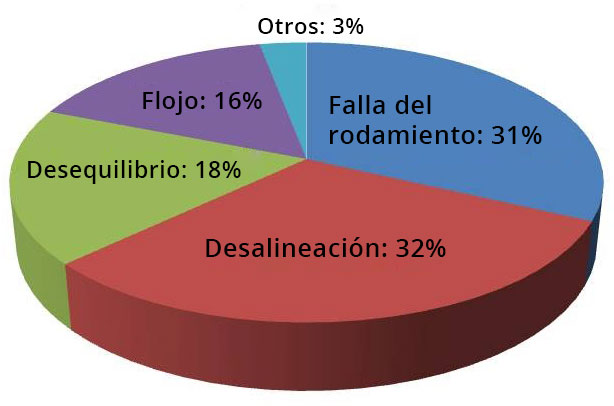

La desalineación del eje se considera la segunda fuente de vibración más frecuente después del desequilibrio, que ocurre debido a una mala alineación entre las partes correspondientes, como mitades de acoplamiento, embragues, ejes, poleas, etc. De una manera más técnica, la desalineación de ejes y acoplamientos se puede definir como la condición en la que la línea central geométrica de dos ejes acoplados no coincide a lo largo del eje de rotación.
Estas desviaciones se pueden presentar de tres maneras diferentes:
Desalineación paralela o radial:
Desalineación angular o axial:
Desalineación combinada:

La desalineación paralela o radial ocurre cuando las líneas centrales de los ejes están paralelas aparte. Y la desalineación combinada, es la más común de las situaciones, y ocurre exactamente cuando hay desviaciones paralelas y angulares en el mismo conjunto de líneas centrales.
Falla prematura del rodamiento, sello, eje o acoplamiento;
Excesiva vibración radial y axial;
Alta temperatura de la carcasa cerca de los rodamientos o alta temperatura del aceite de descarga;
Cantidad excesiva de fugas de aceite en los sellos del rodamiento;
Los tornillos de la base están flojos (“falso soporte”);
Según la pesquisa realizada con los participantes (principalmente profesionales de mantenimiento y confiabilidad) de la Conferencia Internacional de Mantenimiento IMC-2012 sobre la mayoría de las fallas recurrentes de la máquina, la desalineación se destaca en primer lugar.
Fallas de la máquina:

Mientras tanto, algunos estudios indican que las paradas de la máquina en las industrias brasileñas causadas por problemas relacionados con la alineación incorrecta del eje alcanzan más del 50%. Además, se cree que el 90% de las máquinas funcionan fuera de las tolerancias de alineación recomendadas, lo que puede ocasionar una serie de problemas con el rendimiento de la máquina, el costo y la degradación de otros componentes.
En condiciones de desalineación, el aumento de la temperatura, el ruido y la vibración disipan parte de la energía que debe convertirse en trabajo, lo que conduce a una reducción en la eficiencia real de la máquina desalineada.
Hay un costo para producir tal energía disipada que impacta directamente la energía consumida por un motor eléctrico, por ejemplo.Durante su puesta en marcha, el motor eléctrico consume más energía y la desalineación dificulta el ingreso al régimen operativo, lo que aumenta el consumo de corriente y crea problemas en el dimensionamiento de los dispositivos de protección. La alineación correcta puede reducir el consumo de energía hasta en un 15% .

Desafortunadamente, los costos no son restrictivos solo para el consumo de energía, la degradación en otros componentes generada por la desalineación puede conducir a un reemplazo prematuro de componentes como:
Rodamientos: elemento de la máquina que más sufre la desalineación de un eje, que recibe un esfuerzo mucho mayor para el que fue diseñado. Además de la aparición de cargas axiales que dañan, por ejemplo, los rodamientos de bolas, que normalmente no están diseñados para recibir cargas axiales
Sellos: los elementos de sellado no logran un contacto óptimo con el eje, lo que provoca fugas y contaminación. Esto se debe al desgaste excesivo de una determinada parte del elemento de sellado, lo que hace que deje de funcionar. Se observa que un eje desalineado puede causar una reducción de hasta un 70% en la vida útil de un retenedor, por ejemplo.
Acoplamientos: la desalineación puede causar el sobrecalentamiento de los acoplamientos, lo que lleva al secado de las piezas de goma (comúnmente utilizadas en estos elementos).